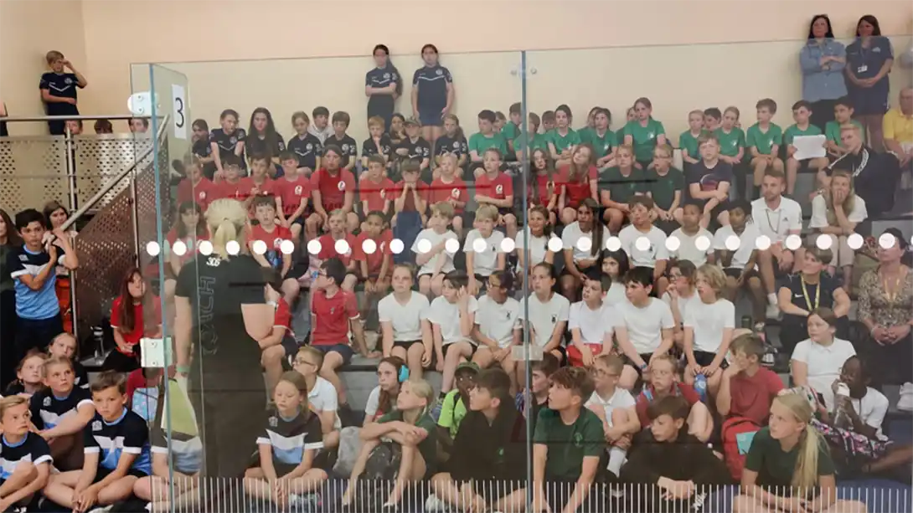
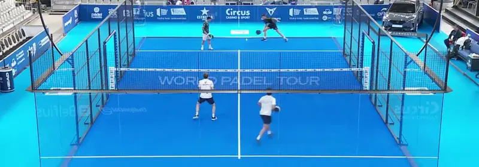

Children Are Not Needed For Squash To Be Successful!
A few weeks ago, I posted a reply to a tweet where I said that “we need thousands of children playing squash to ensure the survival of our sport.” and I want to play Devil’s Advocate to that statement.
When I originally published this article, I didn't proofread it properly and left in a sentence that implied the work done by Off The Wall squash was a waste of time. Once this error was brought to my attention, I immediately correct it, but by then I had upset quite a few poeple, not elast the hard-working coaches at OTW. I want to make it clear, I have nothing but repsect for what they do and apologise for any upset caused. Onto the article...
"Roman Cup days are the best!" says Lauren Selby.
The image above is taken from this tweet by Lauren Selby who is “Director of Coaching at the Off The Wall Squash Academy in Colchester” and as you can see oversees a huge junior programme. The whole team at Off The Wall Squash do an incredible job of promoting squash in schools and clubs.
But are juniors really needed for a sport to be successful?
Many years ago, I was lucky enough to be involved in the SRA/Dunlop Squash Roadshow in the 1990s. Initially as just one of the day coaches to eventually running the whole event. The roadshow visited about 30 clubs and leisure centres a year for about 5 years. It introduced squash to thousands of juniors. Some of the most successful days had nearly 500 children arrive throughout the morning split into different age groups.
I mention this because not only because I was and am a firm believer in the idea of children being the future of squash, I actually worked very hard to help that come to fruition. I didn’t just “talk the talk“, I “walked the walk“, as we say in England. But recently I have come to doubt that approach, or at least want to question it.
Padel: Not am junior in sight, yet it's still successful.
Padel – A Recent Success Story
Padel is NOT new. It was invented in 1969, yes, that’s right 1969, but it has recently become HUGE! I’ve never played padel, although even my town in Spain has a newish 9-court facility and once I have healed from my hip operation I do plan to have a go. Very quickly, let me explain why I think Padel has become popular. I could be wrong and feel free to correct me.
Firstly, it’s easier to learn than squash. The part of the padel racket that hits the ball is bigger than a squash racket, the ball is significantly bigger than a squash ball. The padel racket is shorter than a squash racket meaning you make contact with the ball closer to your body – this is important! Imagine a squash racket twice as long as the current rackets, much much harder would it be to hit the ball? To summarise: it’s easier to to learn to hit the ball than squash.
Next, it can be played indoors or outdoors and has been since its inception. Squash is only just coming around to the idea of outdoor courts. Because the ball is bigger it can be easier to see for spectators. it looks spectacular – very athletic and skilful. Seriously, go checkout some videos on YouTube, it is crazy how they hit the ball!
Lastly, and don’t discount these points; there are no lets and strokes to worry about and no “red, blue, yellow, double yellow” balls to understand. The point about Lets and aStrokes is interesting because it is always a cause for doubt for new players and on the pro tour causes some many arguments. Being a direct racket sport, players are across the net from each other, not fighting each other for the same space. They may be different balls for padel, but I haven’t heard about that. It’s almost as if somebody decided to create the perfect racket sport from scratch and developed Padel!
text 2
text 3
heading
text 1
text 2
text 3
heading
text 1
text 2
text 3
heading
text 1
text 2
text 3

CAPTION TEXT
heading
text 1
text 2
text 3
heading
text 1
text 2
text 3
heading
text 1
text 2
text 3
QUOTE TITLE: QUOTE TEXT
AUTHOR
Final Thoughts
FINAL THOUGHTS TEXT
Continue Reading
• Previous: Vintage Squash Racket Day
• Next: 3 Things Squash Players Can Learn From Tennis Players
• Random: Take A Chance!
• Popular: Things To Know Before You Have Coachings